Releasenotes eBlinqx Hypotheekadvies – April 2025
Onderstaande updates hebben wij in de maand april doorgevoerd:
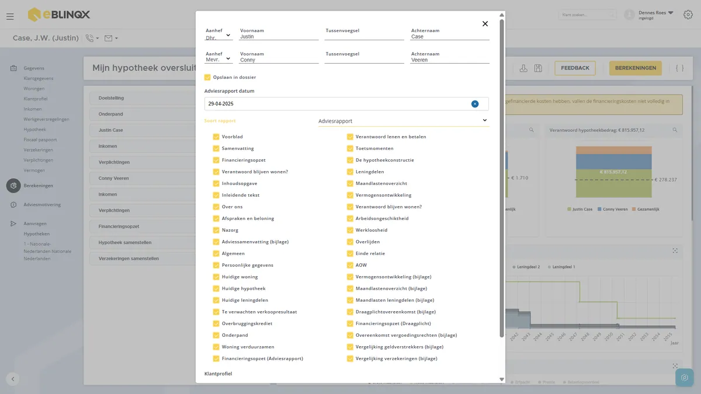
IT-24950: Verbetering weergave hoofdstukken op basis van burgerlijke staat
Vanaf deze release tonen we de hoofdstukken Draagplichtovereenkomst en Overeenkomst vergoedingsrechten in het adviesrapport alleen als dit relevant is op basis van de burgerlijke staat die de adviseur heeft vastgelegd in database (inventarisatie).
Wanneer de klant (of klanten) door hun burgerlijke staat niet in aanmerking komt/kommen voor een draagplichtovereenkomst of overeenkomst vergoedingsrechten:
- Worden de bijbehorende adviesmotivatieblokken niet meer getoond.
- Zijn de bijbehorende opties in de selectiemodal voor het samenstellen van het adviesrapport niet meer zichtbaar.
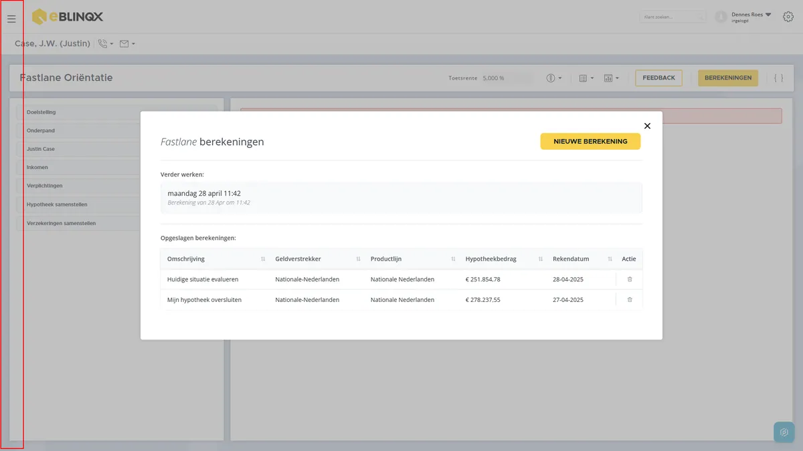
IT-25722: Navigatiebalk PortefeuilleSignalen verbergen bij Fastlane Oriëntatie
De zwarte navigatiebalk, links in de kantlijn, van PortefeuilleSignalen is niet langer zichtbaar in de Fastlane Oriëntatie-omgeving. De zwarte navigatiebalk hoort bij PortefeuilleSignalen. Wanneer deze ook zichtbaar was in Oriëntatie, veroorzaakte dit verwarring bij adviseurs. Ze klikten hier per ongeluk op, waardoor ze de context kwijt raakten of onbedoeld in een andere omgeving terechtkwamen. Met deze verbetering is er minder kans op verwarring en verkeerde navigatie, blijven adviseurs binnen de juiste omgeving en ontstaan er minder onderbrekingen in het oriëntatieproces.
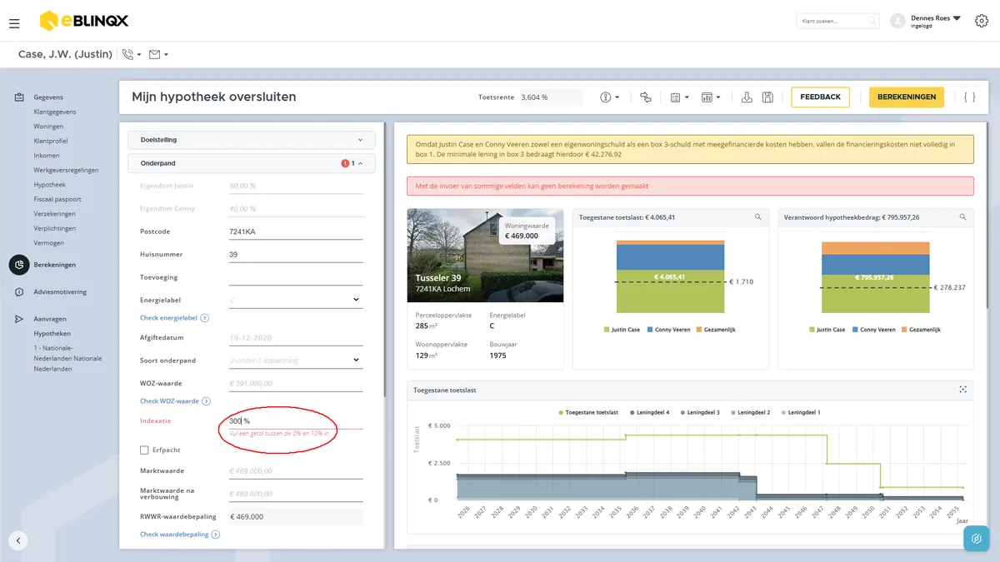
IT-25033: Maximeren indexatiepercentages bij het onderpand
Om invoerfouten te voorkomen en de datakwaliteit te verbeteren, limiteren wij voortaan het indexatiepercentage bij onderpanden tot maximaal 10%. Deze beperking geldt voor de volgende waardes: Marktwaarde, WOZ-waarde en Erfpacht.
In de praktijk kwam het voor dat adviseurs per ongeluk extreem hoge percentages invoerden (bijvoorbeeld 271%), waardoor eBlinqx Hypotheekadvies niet verder kon rekenen en een foutmelding ontstond. Door deze aanpassing zorgen we voor stabielere berekeningen en een betere gebruikerservaring.
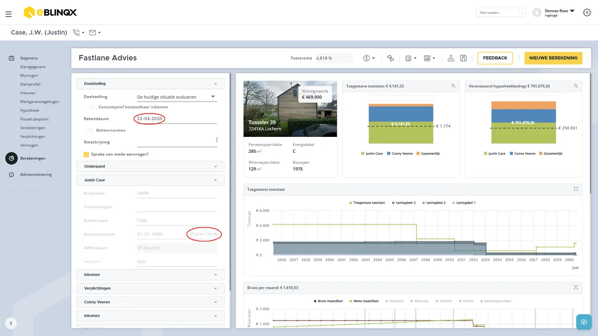
IT-25772: Leeftijd tonen op rekendatum
De leeftijden van de aanvrager en partner bij de geboortedatumvelden worden vanaf nu berekend op basis van de rekendatum in plaats van de huidige datum. Door de leeftijden te koppelen aan de rekendatum, sluiten ze beter aan bij het moment waarop de hypotheekberekening wordt uitgevoerd. Dit voorkomt verwarring en zorgt voor een consistente en betrouwbare weergave van informatie in het aanvraagproces. Deze verbetering bouwt voort op een eerdere toevoeging waarbij leeftijden zichtbaar werden gemaakt naast geboortedatums. Met deze verfijning wordt de getoonde leeftijd nog relevanter binnen de context van de berekening.
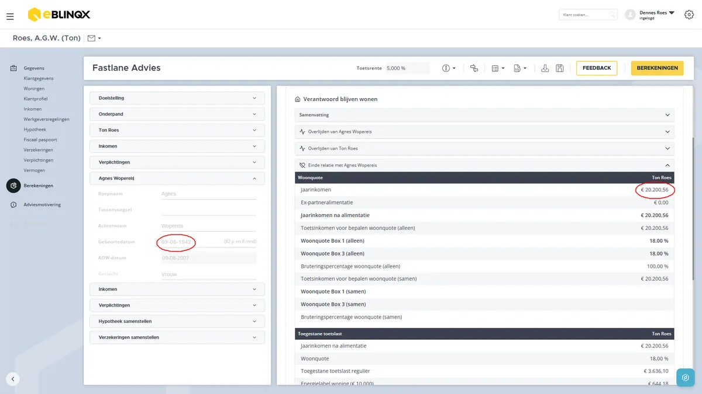
IT-21561: Einde relatie vanaf AOW-leeftijd
Vanaf deze release wordt bij het beëindigen van een relatie waarbij beide personen AOW-gerechtigd zijn, het juiste AOW-bedrag voor een alleenstaande toegepast. Dit betekent dat de overblijvende of alleenstaande aanvrager voortaan automatisch het alleenstaandenbedrag ontvangt, in plaats van het bedrag voor gehuwden/partners. Deze aanpassing geldt zowel voor situaties na overlijden als bij relatiebeëindiging vanaf de AOW-leeftijd.
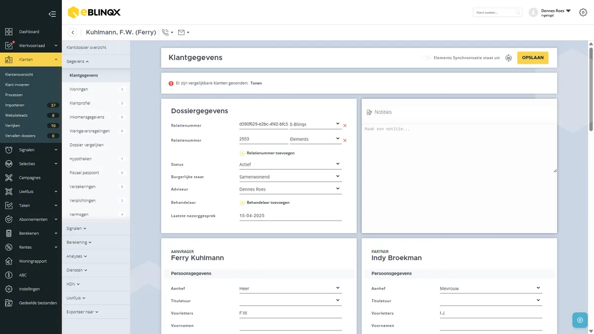
IT-18665: Automatisch uitschakelen van Elements Synchronisatie
Om ongewenst dataverlies te voorkomen, wordt de knop ‘Elements Synchronisatie staat aan’ voortaan automatisch uitgeschakeld bij het opstarten van eBlinqx Hypotheekadvies vanuit Elements. Tot nu toe bleef deze knop bij veel adviseurs onbedoeld actief, waardoor data in eBlinqx Hypotheekadvies tijdens nachtelijke synchronisaties kon worden overschreven met informatie uit Elements. Deze aanpassing voorkomt dat risico.
Voordelen:
✔ Voorkomt onbedoeld dataverlies
✔ Minder handmatige acties nodig
✔ Meer controle over datastromen
Na het passeren van de hypotheek kan de adviseur de synchronisatie handmatig weer inschakelen indien gewenst.
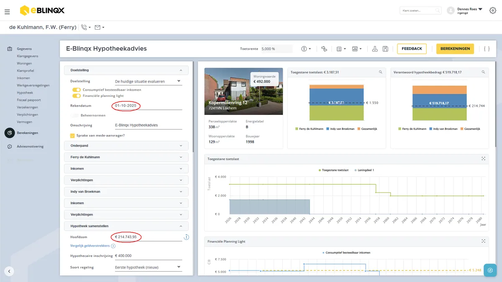
IT-24474: Aanpassing in berekening pro resto hoofdsom
Bij het verplaatsen van de rekendatum naar een toekomstig moment worden voortaan de volgende waarden automatisch opnieuw berekend:
-
De pro resto hoofdsom
-
De resterende rentevastperiode
-
De resterende looptijd van de hypotheek
-
De resterende periode met recht op renteaftrek
Deze wijziging zorgt ervoor dat de berekening beter aansluit op de gekozen rekendatum en een actueel beeld geeft van de hypotheek op dat moment.
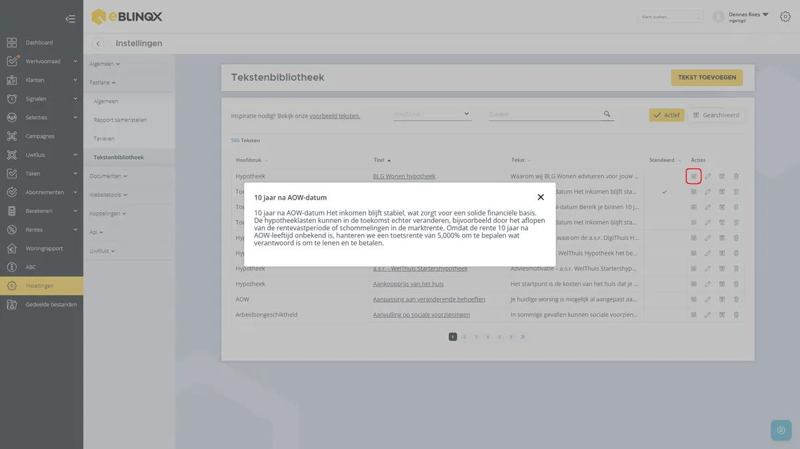
IT-25013: Nieuw: Snel even spieken in de tekstenbibliotheek 👀📚
Goed nieuws voor alle adviseurs! In de tekstenbibliotheek kun je nu met één klik een tekst bekijken via een handige kijkfunctie – vergelijkbaar met het PDF-voorbeeld in het klantprofiel. Geen gedoe meer met eerst openen: je ziet direct wat erin staat. Lekker snel, lekker efficiënt!
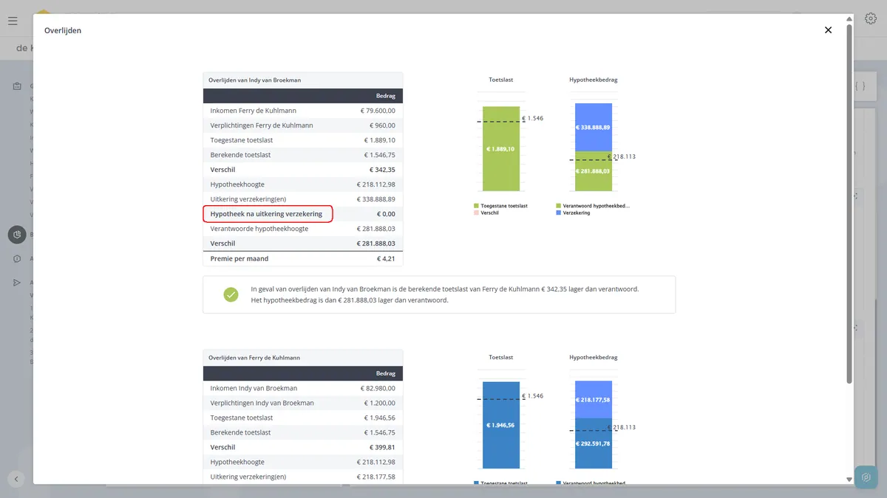
IT-25156: Tekstuele verbetering – kortere titel bij uitkering verzekering ✂️
De tekst ‘Hypotheekhoogte na uitkering verzekering’ is ingekort naar ‘Hypotheek na uitkering verzekering’. Dankzij deze aanpassing wordt de tekst nu netjes op één regel weergegeven in de applicatie én oogt het rapport overzichtelijker doordat er meer ruimte is tussen tekst en getallen. Klein verschil, groot effect!
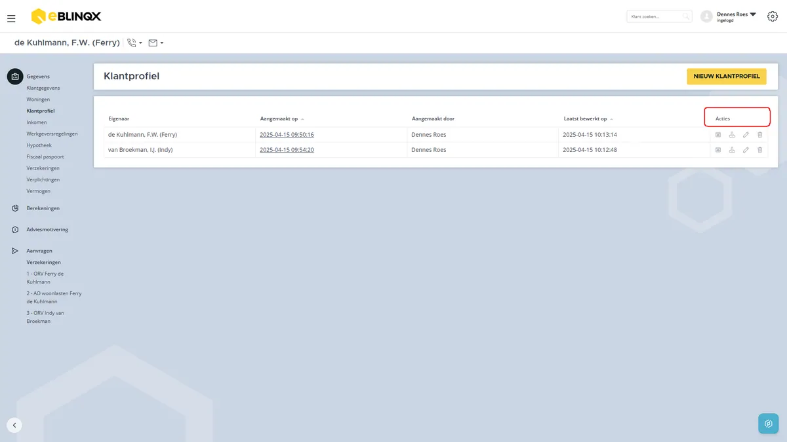
IT-25014: Titel ‘Acties’ toegevoegd boven actiekolom in klantprofiel ✅
Voor nóg meer consistentie binnen onze software hebben we nu de titel ‘Acties’ toegevoegd boven de actiekolom in het klantprofiel. Zo is in één oogopslag duidelijk waar de acties te vinden zijn. Kleine verbetering, groot gebruiksgemak!
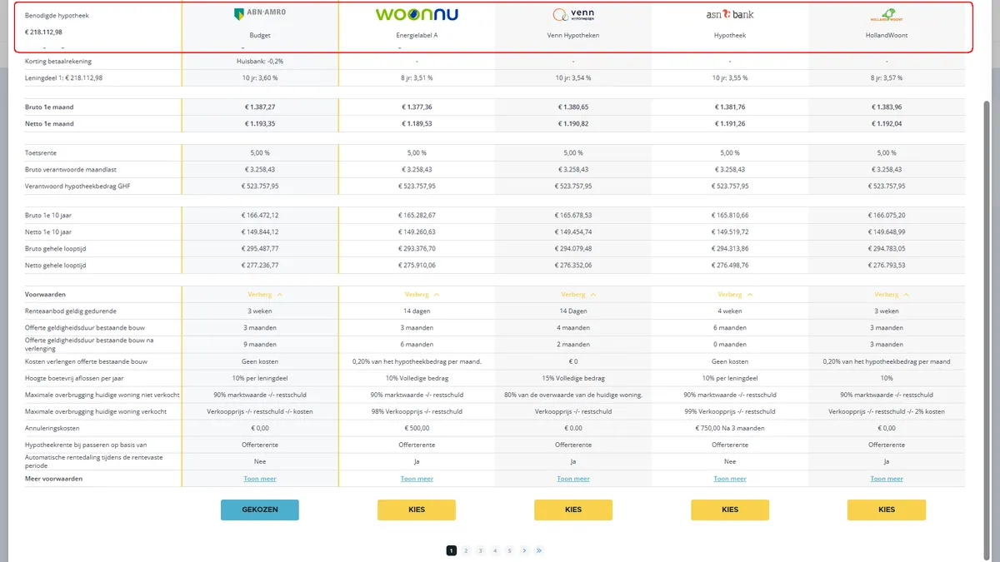
IT-25619: Altijd zicht op de geldverstrekker tijdens het vergelijken! 🔍📌
Vergelijken is nóg makkelijker geworden! In het onderdeel Geldverstrekkers vergelijken blijft de header met de naam van de geldverstrekker, de productnaam én het logo nu keurig in beeld terwijl je scrolt. Superhandig wanneer je voorwaarden naast elkaar bekijkt — zo weet je altijd precies bij welke aanbieder je bent. Wel zo overzichtelijk, toch?
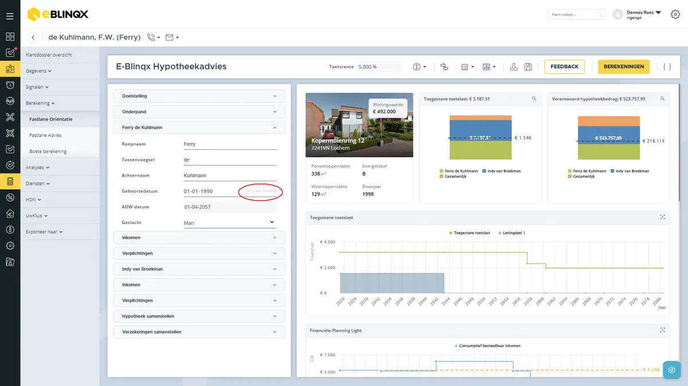
IT-25588: Leeftijd nu zichtbaar in jaren én maanden! 🎉
Vanaf nu zie je bij de geboortedatum van de klant direct ook de leeftijd in jaren en maanden. Superhandig! Zo hoef je niet meer zelf te rekenen en zie je in één oogopslag of een klant bijvoorbeeld bijna 57 jaar en 3 maanden is. Een kleine toevoeging met grote impact!
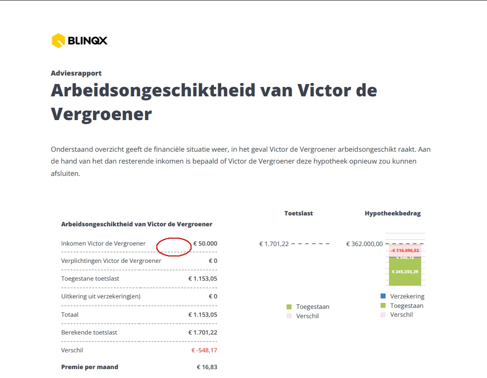
IT-23365: Percentage bij AO uit adviesrapport verwijderd 📄❌
We hebben het percentage van het resterende inkomen bij arbeidsongeschiktheid (AO) uit het adviesrapport gehaald. Dit zorgt voor een duidelijker en neutraler weergave van de informatie, zonder verwarring of onnodige aannames. Weer een stapje richting een nóg professioneler rapport!
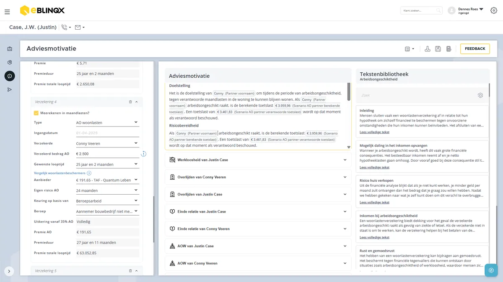
IT-25388: Alleen voornaam in automatisch gegenereerde teksten
We hebben de opmaak van automatisch gegenereerde teksten in het adviesrapport aangepast. In de paragrafen over Arbeidsongeschiktheid (AO), Werkloosheid (WW), AOW, Overlijden partner en Einde relatie wordt voortaan alleen de voornaam van de klant gebruikt. Waarom deze wijziging? Het herhaald noemen van de voornaam en achternaam zorgde voor een onrustige leeservaring. Door alleen de voornaam te tonen, leest het rapport natuurlijker en prettiger. Let op: in de titels van de paragrafen blijft de volledige naam wél zichtbaar.
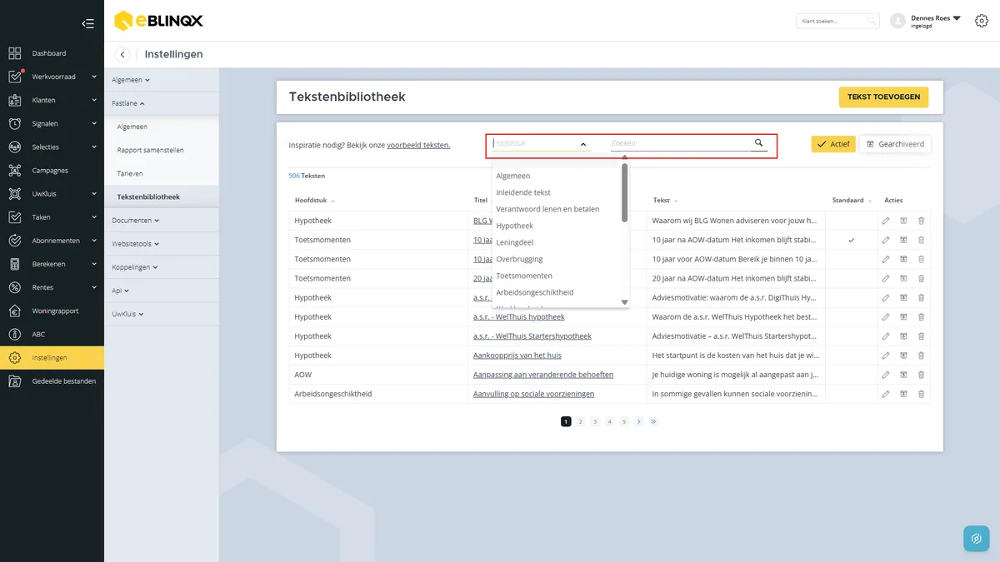
IT-25383: Verbeterde navigatie in de Tekstenbibliotheek: rubrieken eerst, dan zoeken
We hebben de werking van de zoekfunctie in de Tekstenbibliotheek aangepast om het zoeken naar teksten sneller en intuïtiever te maken. Vanaf nu kiest de adviseur eerst een hoofdstuk of rubriek waarin hij/zij wil zoeken. Pas daarna wordt de zoekterm ingevoerd. Waarom deze wijziging? De eerdere werkwijze – eerst zoeken en dan pas filteren – bleek in de praktijk omslachtig en niet gebruiksvriendelijk. Door het om te draaien, wordt het zoeken veel gerichter en overzichtelijker.
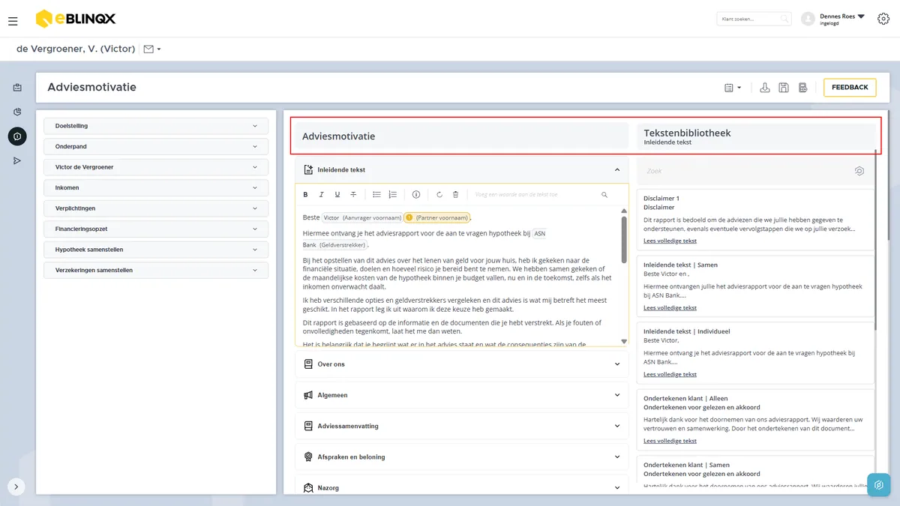
IT-25069: Vastgezette titelbalk bij het motiveren van het advies
Vanaf deze release blijven de titelbalken ‘Adviesmotivatie’ en ‘Tekstenbibliotheek’ altijd zichtbaar wanneer je door de pagina scrollt. Wat betekent dit voor jou?
-
Meer overzicht: Je weet altijd waar je bent in het scherm, zelfs bij langere teksten.
-
Sneller werken: Geen onnodig heen-en-weer scrollen meer om knoppen of context terug te vinden.
-
Gebruiksvriendelijker: De interface voelt rustiger en intuïtiever aan, wat bijdraagt aan een prettigere werkomgeving.
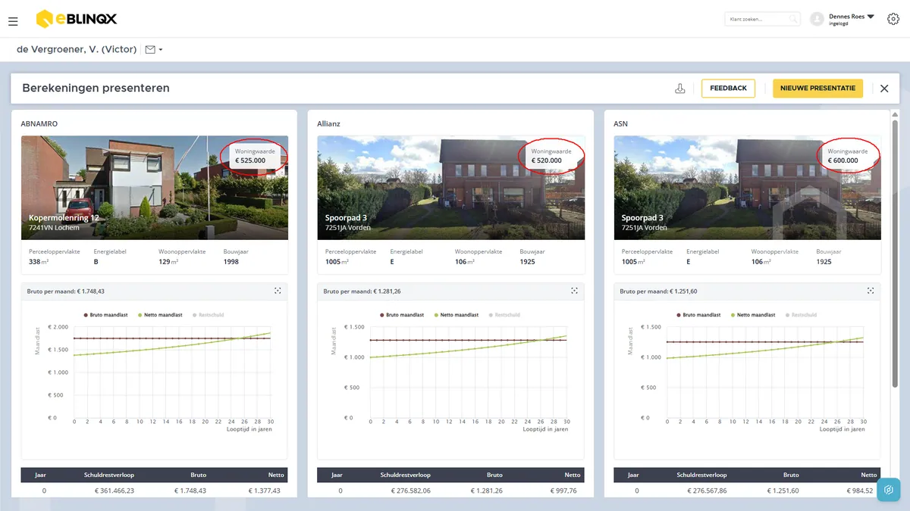
IT-24997: Woningwaarde bij het onderdeel 'Berekeningen vergelijken'
Voorheen werd bij het vergelijken of presenteren van hypotheekberekeningen standaard de RWWR-waarde (onze modelmatige waarderapport) gebruikt. Met deze release is dit aangepast: voortaan wordt de marktwaarde gehanteerd die de adviseur zelf heeft ingevuld. Dit sluit beter aan bij de praktijk en biedt meer consistentie in de adviesrapportage.
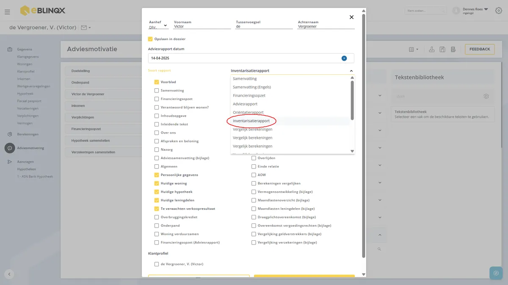
IT-25379: Sjabloon Inventarisatierapport beschikbaar
Binnen het onderdeel 'Rapport samenstellen' hebben wij nu het het sjabloon Inventarisatierapport toegevoegd. Dit sjabloon is voor alle gebruikers te vinden via: Instellingen → eBlinqx Hypotheekadvies → Rapport samenstellen. Het Inventarisatierapport bevat de volgende onderdelen:
-
Voorblad met de titel Inventarisatierapport
-
Persoonlijke gegevens
-
Huidige woning
-
Huidige hypotheek
-
Huidige leningdelen
-
Te verwachten verkoopresultaat
Deze toevoeging maakt het mogelijk om snel en overzichtelijk de huidige situatie van een klant in kaart te brengen.
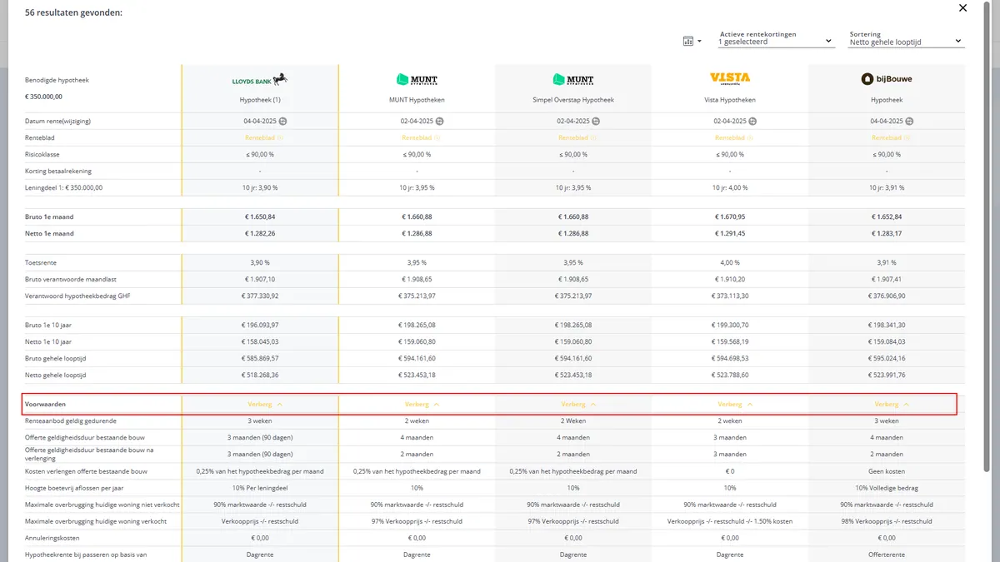
IT-22218: Nieuw in eBlinqx Hypotheekadvies: hypotheekvoorwaarden nu beschikbaar!
Met trots introduceren we de eerste release van hypotheekvoorwaarden in eBlinqx Hypotheekadvies! Vanaf nu kun je via de link ‘Toon meer’ direct doorklikken naar de volledige set voorwaarden in Findata. Zo heb je snel en overzichtelijk toegang tot alle relevante informatie die je nodig hebt. Wat betekent dit voor jou?
-
Sneller inzicht in de specifieke voorwaarden van geldverstrekkers
-
Minder klikken om bij de juiste informatie te komen
-
Meer gemak bij het onderbouwen van je advies
En dit is nog maar het begin! In de komende periode worden steeds meer hypotheekvoorwaarden direct in eBlinqx Hypotheekadvies zelf gepresenteerd, zodat je nóg eenvoudiger kunt werken. Stay tuned – we bouwen hard door aan een nóg slimmere advieservaring!
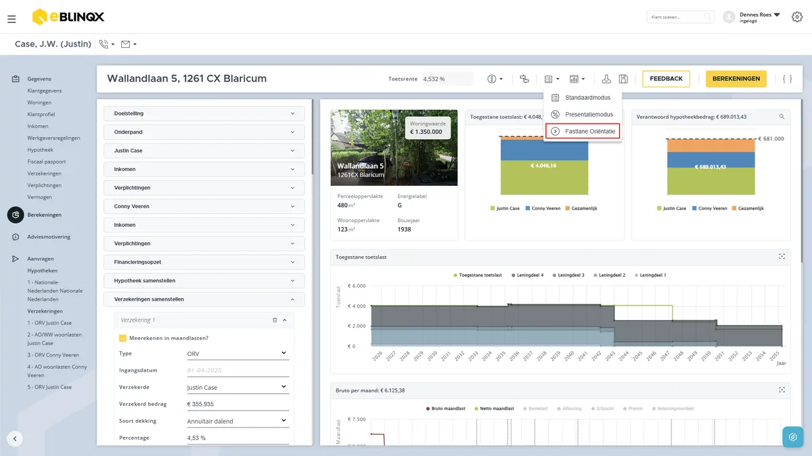
IT-25260 – Switchen tussen Fastlane Advies en Fastlane Oriëntatie
Het is vanaf nu mogelijk om eenvoudig te schakelen tussen Fastlane Advies en Fastlane Oriëntatie. Dit biedt je meer flexibiliteit bij het vergelijken van scenario’s of het oriënteren op alternatieve opties.
👉 Let op: Wijzigingen die je aanbrengt in Fastlane Oriëntatie worden uitsluitend opgeslagen in de berekening zelf. Deze wijzigingen worden niet automatisch overgenomen in de database van Fastlane Advies. Houd hier rekening mee bij het maken van aanpassingen.
Fastlane Oriëntatie
De gegevens die je in Fastlane Oriëntatie invoert, worden alleen in de berekening zelf opgeslagen. Fastlane Oriëntatie is ideaal voor het maken van snelle berekeningen en simulaties. Je kunt bijvoorbeeld eenvoudig bekijken wat er gebeurt als de klant straks binnen de 10 jaar van zijn of haar AOW-datum komt, als het inkomen verandert, of als een lening doorloopt of wordt afgelost. De gegevens die je invoert, worden niet toegevoegd aan een centrale database, maar blijven alleen in die specifieke berekening bewaard. Als we de ingevoerde gegevens zouden opslaan in onze database dan worden de feitelijke gegevens overschreven en zou dit de kracht van de simulaties verminderen, en daarom doen we dat niet.
Fastlane Advies
Voor Fastlane Advies is er wél een aparte database (inventarisatie). Hierin worden alle feiten vastgelegd en verwerkt. Er wordt niet meer gesimuleerd; we gaan uit van de ingevoerde gegevens zoals ze zijn. Iedere nieuwe berekening in Fastlane Advies wordt gevoed met de gegevens uit deze database. Deze gegevens worden ook gebruikt voor de hypotheekaanvraag en om het HDN-aanvraagformulier in te vullen.
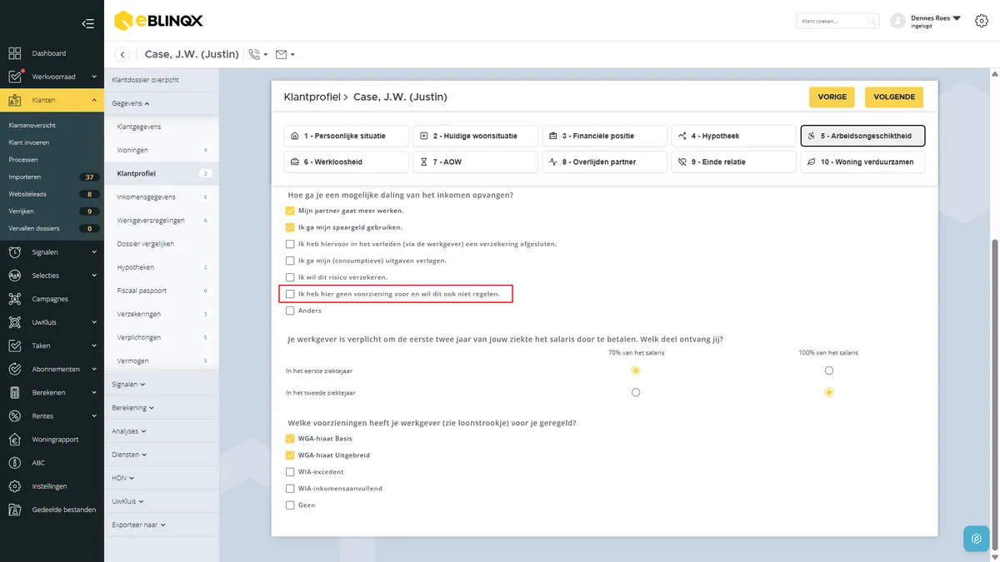
IT-25385: Verwijderen keuzeoptie in klantprofiel
De keuzeoptie ‘Ik heb hier geen voorziening voor en wil dit ook niet regelen’ is verwijderd uit het klantprofiel bij de thema’s Arbeidsongeschiktheid (AO), Werkloosheid (WW) en Overlijden partner.
Deze wijziging is doorgevoerd in zowel de applicatie als in de output, waaronder het adviesrapport en eventuele andere downloads. Hierdoor sluiten de rapportages beter aan op het actuele adviesproces en wordt de focus gelegd op passende oplossingen in plaats van op het expliciet afzien daarvan.
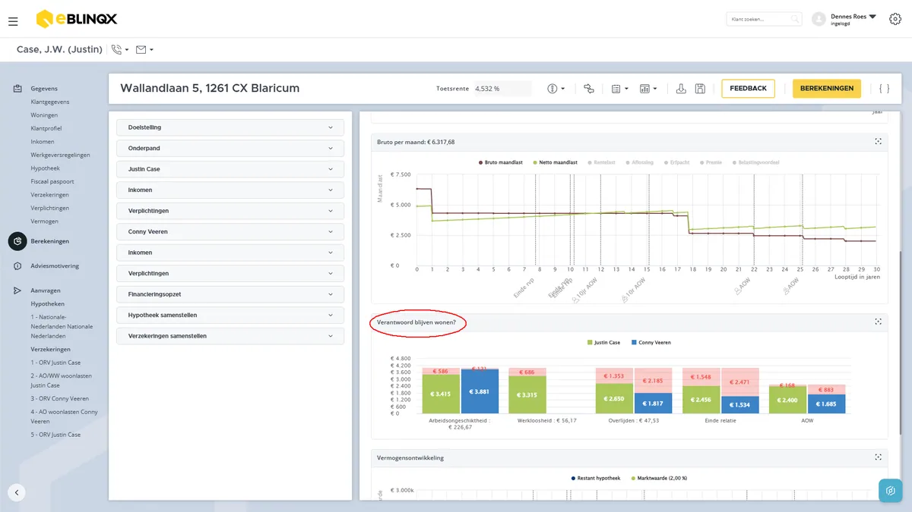
IT-25026: Verantwoord blijven wonen? Ja voor € 0,00 per maand
Bij het thema ‘Verantwoord blijven wonen’ toonden wij eerder altijd de tekst: ‘Ja, voor € x per maand’. Deze toevoeging is nu verwijderd uit de applicatie en de rapportages.
De reden hiervoor is dat wanneer een adviseur (nog) niet alle verzekeringen adviseerde, er automatisch de tekst verscheen: ‘Verantwoord blijven wonen? Ja, voor € 0,00 per maand’. Dit riep verwarring op en gaf een onwenselijke indruk.
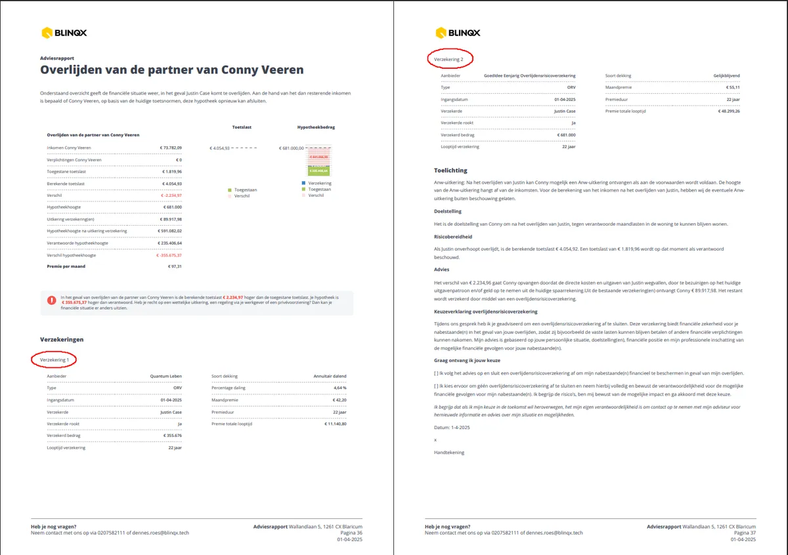
IT-24551 – Volledige weergave ORV’s en woonlastenbeschermers in adviesrapport
We hebben de weergave van overlijdensrisicoverzekeringen (ORV’s) en woonlastenbeschermers in het adviesrapport uitgebreid. Waar voorheen slechts één ORV en één woonlastenbeschermer werd getoond, worden nu alle geadviseerde producten weergegeven, inclusief handmatig toegevoegde ORV’s en woonlastenbeschermers. Deze aanpassing zorgt ervoor dat het adviesrapport beter aansluit bij het daadwerkelijke advies en completer is voor de klant.
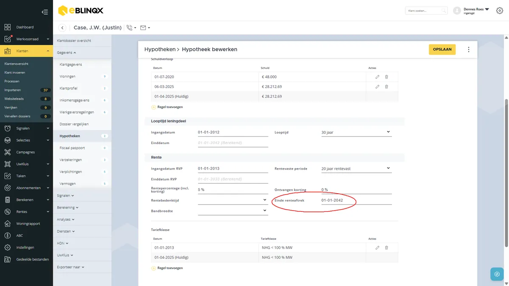
IT-25221 – Einddatum fiscale renteaftrek nu correct opgeslagen bij inventarisatie
Bij het inventariseren van een bestaande hypotheek werd de einddatum van de fiscale renteaftrek eerder niet opgeslagen. Dit leidde tot onvolledige gegevens in het dossier. Dit probleem is nu opgelost: de einddatum van de fiscale aftrek wordt voortaan correct vastgelegd in het eBlinqx Hypotheekadviesdossier bij het invoeren van een bestaande hypotheek.
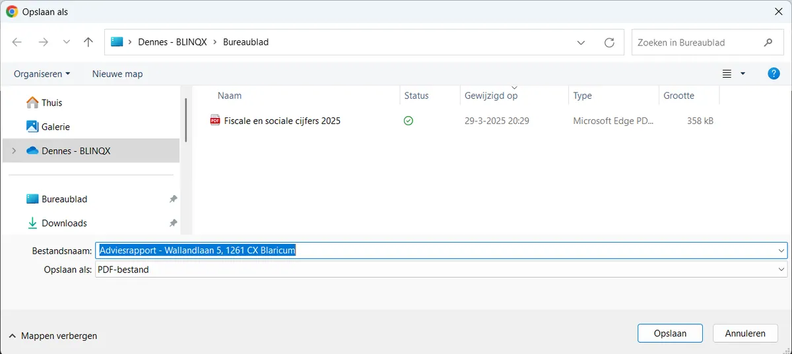
IT-25301 – Naam van berekening nu zichtbaar in bestandsnaam bij download
Bij het downloaden van een berekening of adviesrapport wordt vanaf vandaag de tenaamstelling van de berekening automatisch toegevoegd aan de bestandsnaam. Daarnaast is de toevoeging ‘Fastlane’ uit de bestandsnaam verwijderd om verwarring te voorkomen. Een bestand dat voorheen werd opgeslagen als bijvoorbeeld FDF_20250330.pdf, wordt nu automatisch opgeslagen als bijvoorbeeld Financieringsopzet_20250330.pdf. Zo zie je direct om welk document het gaat, zonder dit handmatig te hoeven aanpassen.
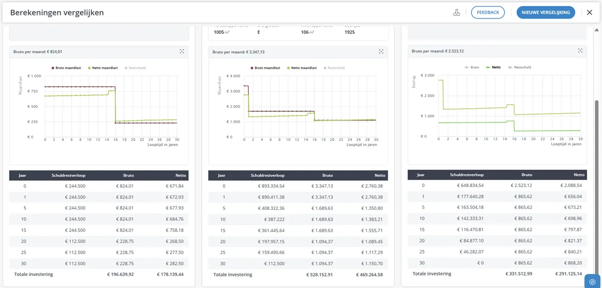
IT-24630 – Correcte einddatum voor bankspaarleningdelen in vergelijkende berekening
In het thema Berekeningen vergelijken hebben we een correctie doorgevoerd voor leningdelen met de aflosvorm Banksparen. Voorheen liepen deze leningdelen in de vergelijkende berekening onterecht door ná de afgesproken einddatum, wat een vertekend beeld gaf van de lasten.
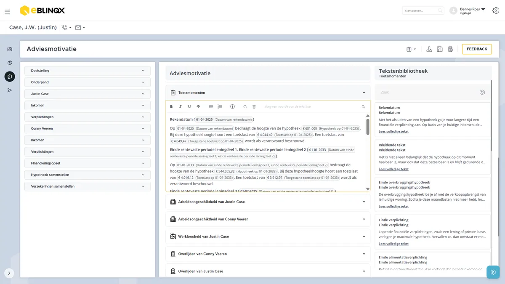
IT-25250 – Toevoeging tekstuele onderbouwing bij toetsmomenten
Bij de toetsmomenten is vanaf nu, naast de cijfermatige onderbouwing, ook de bijbehorende tekstuele toelichting beschikbaar. Deze aanvulling biedt meer context en inzicht in de achterliggende cijfers, wat de interpretatie en beoordeling van de toetsmomenten vereenvoudigt en versterkt.